正君
之教

依据国家《中学德育大纲》《中小学文明礼仪》《中国学生素养2016》《中小学德育工作指南》（2017）和深圳中学德育目标要求，结合8班学生年龄特点和班级定位，制定8班初二阶段德育发展方向，以此开展和评估班级工作，以期能够增进家校理解与合作，为培养具有现代特质的中学生提供发展性支持。
一、目标描述
总目标：立德树人，全面发展
（一）初步培养全球视野、家国情怀、共情意识
（二）深圳中学学生特质五维度：荣誉、责任、习惯、思维、卓越
（三）培养持之以恒、用心专一、勤敬有为，修己达人之德行
（四）培养组建团队、制定队规、依规办事、协调关系、解决问题的能力，学术品质增强
（五）理解父母师长，初步涉足社会，感受个人社会力、团队影响力
（六）适应初二青春期心理变化，情绪与行为的自控能力有所发展
二、主要内容
总内容：公益养心，学术长才，长跑健身，迎战会考
（一）价值观教育：关于核心价值观的体系构建是一个意义深远的行动，关乎孩子的生命状态和民族的未来。本学期着重构建的是：“恒敬”，持恒专一，敬业修身。
（二）学习小组： 班级是一个学习团队，由仁义礼智信五个学习小组构成，初二还要组建学科学习小组，发扬管理育人、协同育人之功。
（三）学科管理： 把各学科的管理分为四个学段，不同学段进行考核；针对性要强，让每一个学生都在实现个人目标的征途上奔跑。加强个性化，差异化。
（四）综合能力 ：在沟通能力、思维能力、审美能力、表达能力、动手能力、协作能力等方面呈现出不一般的素质。
（五）文化生活： 家长群体将发挥主导作用和资源优势，举行与成长有关的互动活动，深化学习的情趣。合力打造亲子文化，促进学生身心健康发展。
当我们把老师、同学、家长和社会四个主体融合在一起时，我们会发现这是一种十分美好的机缘，我们可以创造更有意思的生存状态。只要我们都充分尊重，十分珍惜，万分努力，就能争得百分的满意。
模式：学习型团队
口号：奋斗点亮自己 光芒照亮他人
结构：班主任----班委会----学习小组-----家长群
班委会
班长：艺 副班长：曹
学习委员：柯 体育委员：骏 慈 江 宣传委员：悦
文娱委员：玥 生活委员：绚 纪律委员：承
电教管理员：圳
静校管理员：江（协理：承、彩、培）、云（图书馆）
卫生委员：骏（总负责） 承+灏+彩
学习小组：仁（付）、义（昕）、礼（欧）、智（焓）、信（柯）
家委会——
会长：黎女士（悦然妈）
学习部：宇杰妈，悦然妈，容达妈、扬柯妈
文体部：瑾禹妈，静怡妈，毓焓妈
宣传部：婧语妈，哲宇妈
财务部：绚儿妈，宝仪妈
生涯部：华慈妈，谢彤妈，元曦妈
家长义工组
：
仁（瑾禹妈 悦然妈 华慈妈）
义（宝仪妈 静怡妈）礼（绚儿妈 宇杰妈）智（婧语妈 毓焓妈 谢彤妈）信 （容达妈 哲宇妈 扬柯妈）
1、班级风采展示：3分钟视频。艺、圳、悦、权、桁、茹、汪等制作完成。
2、期末评优
优秀班干（3人）：艺、骏、悦
文明规范生（20人，主要由各组提供名单）：慈、曹、思、裕、玥、郭、鑫、静、昕、雨、位、彤、欧、焓、婧、彦、哲、姚、柯、茹
3、提前放寒假
因疫情，寒假提前，从10号开始。
2022年1月1-3日，放假。
2、期末考试
1月6-7日期末考试：51人参加， 郭与庞病假。
期末考试成绩（1-10）
总分A+等（4人）：裕、艺、柯、曹
A等（12人）：慈、骏、圳、欧、位、焓、思、昶、婧、玥、曦、雨
语文A+等（4人）：裕、艺、曹、骏
A等（14人）：柯、慈、圳、位、焓、思、婧、玥、雨、静、鑫、凯、冰、悦
数学A+等（1人）：欧
A等（15人）：柯、慈、圳、位、焓、思、玥、裕、艺、曹、骏、昶、曦、轩、彤
英语A+等（5人）：位、思、裕、曹、静
A等（10人）：柯、焓、艺、骏、曦、欧、婧、胡、绚、悦
历史A+等（6人）：艺、柯、裕、骏、曹、郑
A等（14人）： 焓、婧、胡、位、辉、玥、昕、欧、慈、圳、轩、哲、白、思
物理A+等（6人）：柯、欧、裕、慈、圳、昶
A等（11人）：焓、艺、曦、婧、胡、位、彤、辉、玥、雨、昕
道法A+等（4人）：裕、曹、骏、思
A等（17人）：艺、慈、圳、欧、位、焓、昶、婧、轩、绚、哲、郑、凯、弈、宝、悦、浩宸
地理A+等（5人）：昶、裕、柯、焓、白
A等（12人）： 慈、曹、骏、思、雨、昕、艺、圳、彤、哲、郑、玥
生物A+等（4人）：艺、圳、裕、柯
A等（12人）： 慈、位、昶、绚、曹、骏、思、达、曦、雨、昕、茹
体育A+等（25人）：曹、骏、思、雨、艺、彤、哲、玥、昶、柯、焓、桁、豪、婧、权、位、绚、曦、凯、胡、 辉、欧、静、禹、茹
向前进的同学（27人）：彤、禹、轩、哲、欧、昕、弈、沛、绚、桁、慈、丘、位、汪、豪、航、柯、达、曦、温、圳、权、姚、婧、裕、茹、艺
3、疫情防控
7号考完最后一门，全体同学在校内做核酸检测
2021年12月31日下午3：30-5：20，C403本班教室，音乐课+自习课时间，班级举行迎新年元旦联欢活动。主持人：江、毛、豪、汪。总策划：艺、曹、玥。会场布置：悦、骏、培等。PPT制作：圳。摄影：曦。饮食购置：家委会长。节目：各组组长。卫生：仁组。
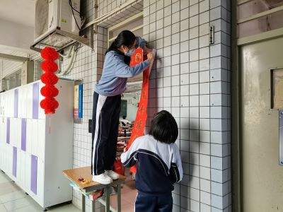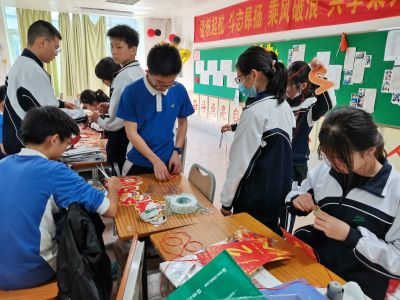
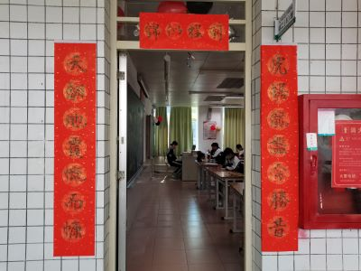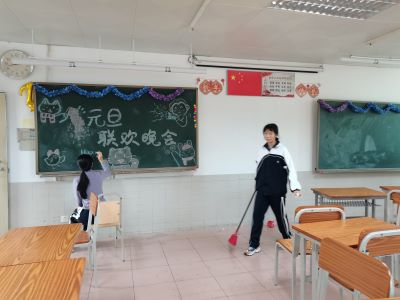
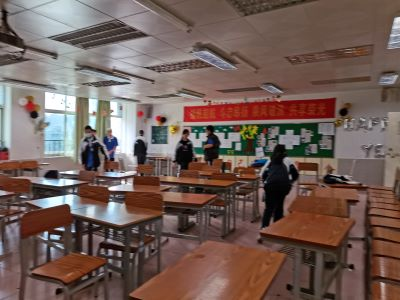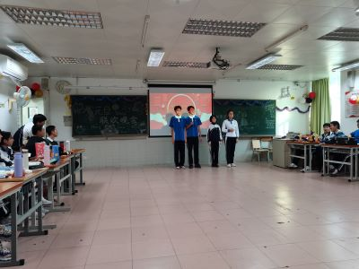
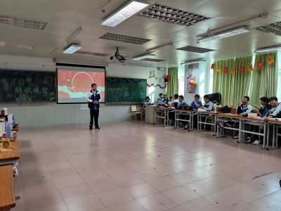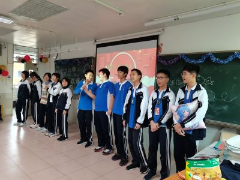
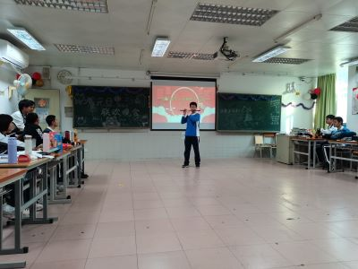

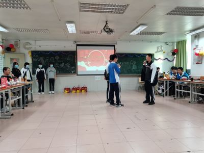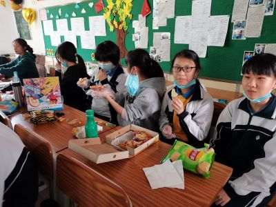
 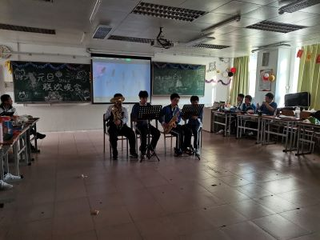
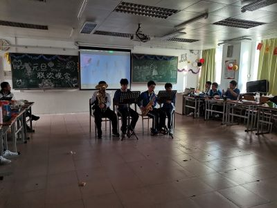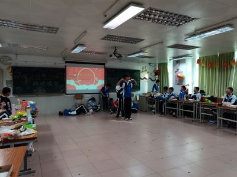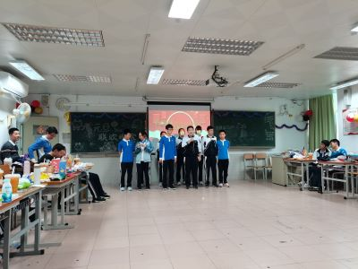
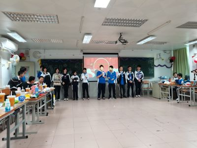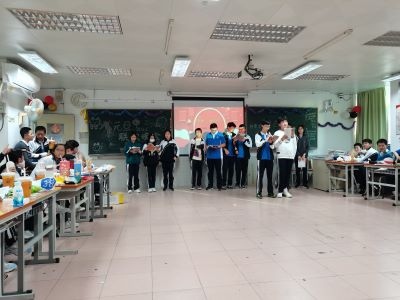
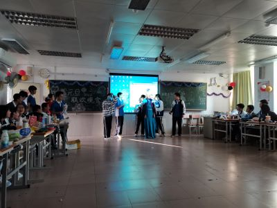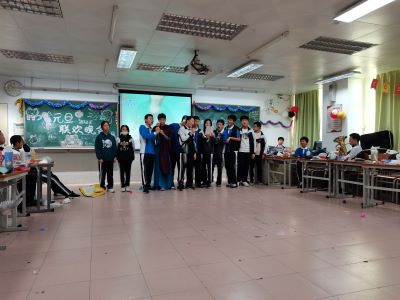
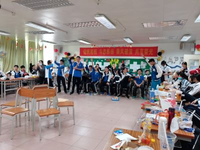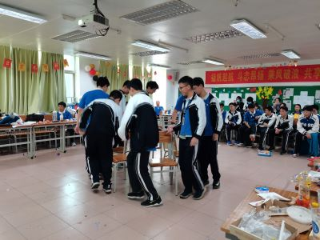
2、主题班会——共建文明校园
12月27日晨，全校统一班会主题——拒绝校园欺凌，共建文明校园
3、期末体育考试
12月29日下午，年级举行体育考试
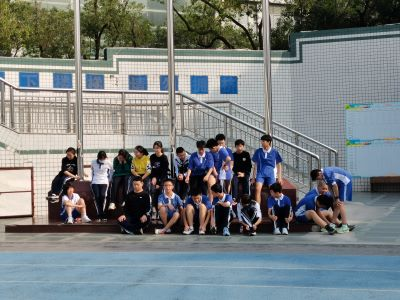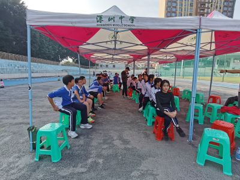
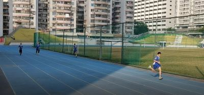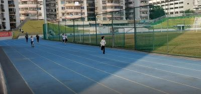
4、校园十大歌手决赛
12月27日，玥同学参加此项比赛。
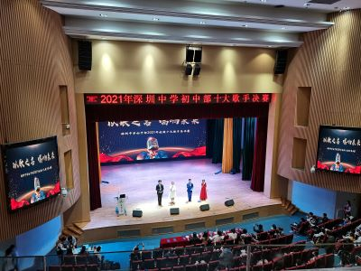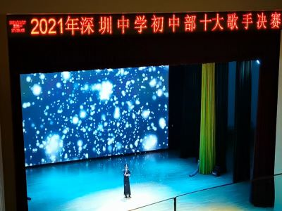
5、义工活动（第18次，19次）
本周校内义工活动：1230，D605；1231，C406。
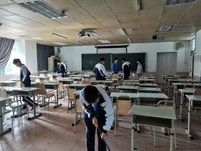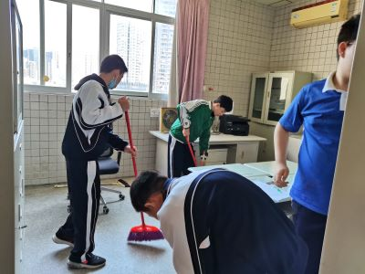
6、完成评教活动
7、启动综合素质评价
12月20日晨，年级统一主题班会：劳动教育+英语听说考前教育
家委制作劳动教育公众号（班级公众号第12期）：劳动创造美好生活
2、法律知识竞赛
12月22日，道法科组举行初二年级法律知识竞赛。承、慈获得一等奖。
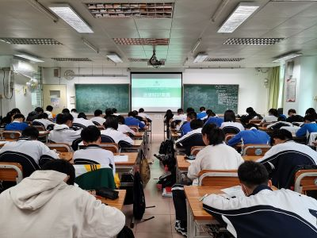
3、12月24日上午，期末英语听说考试
4、考试风波
12月24日上午听说考试后，突发事件，紧急处置。
5、 义工活动（第16次，17次）
本周校内义工活动：1223，D605；1224，D404。
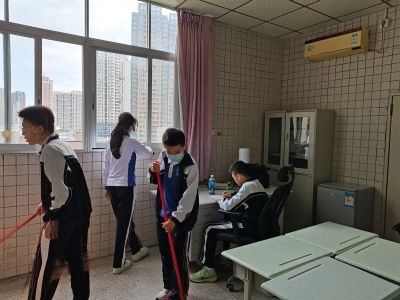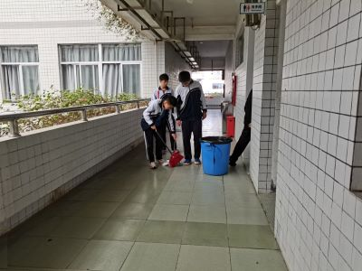
6、筹办元旦联欢
7、制作劳动教育活动板报
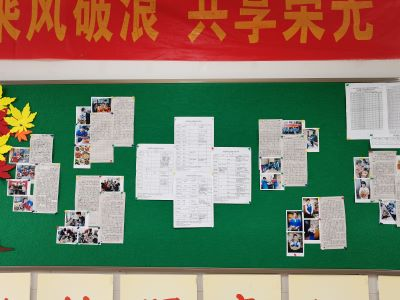
8、调整考前复习座位
12月13日，晨，先锋剧场，全校集会，校运会表彰。
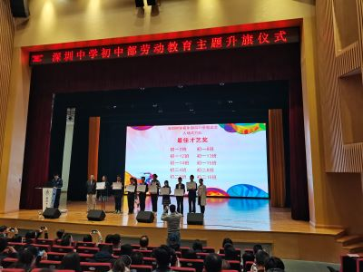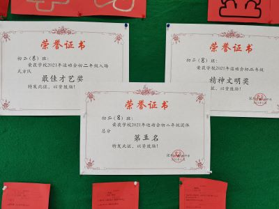
2、推进学校倡导的“我劳动我光荣”的劳动科技活动
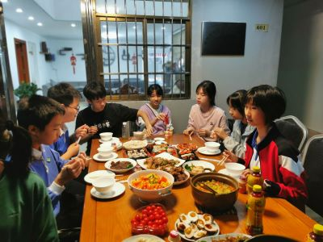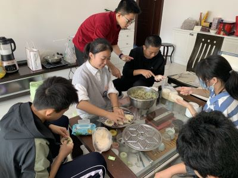
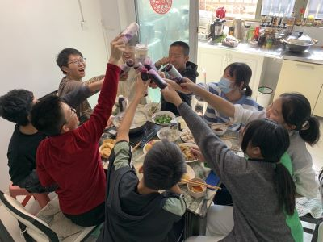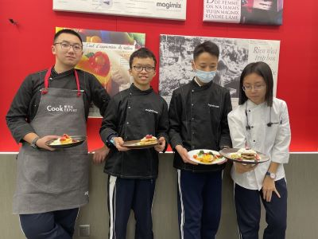
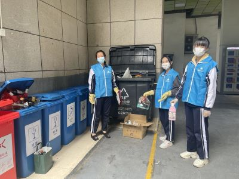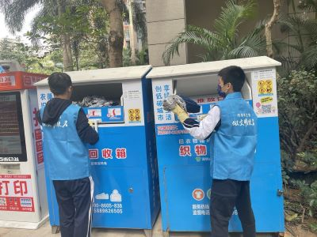
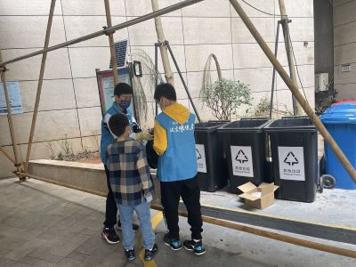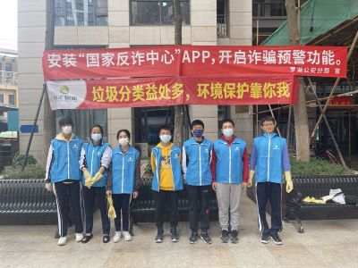
3、宇杰同学获校凤凰木杯一等奖
宇杰一等，子裕二等，扬柯、 昶荣三等。
4、 义工活动（第14次，15次）
本周校内义工活动：1216，D605；1217，D404。
5、校十大歌手海选
玥仪同学参加
6、完成选修课调查
7、 班主任强调
严格遵守复习纪律
1、主题班会
12月6日，年级统一主题：劳动教育
2、推进学校倡导的“我劳动我光荣”的劳动科技活动
12月6日，由曹同学组织各组制定活动计划。
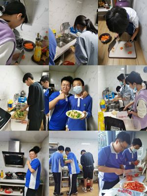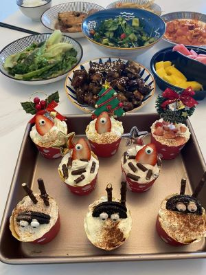
3、体测
本周体育课完成体测
4、义工活动（1210第13次）
本周校内义工活动：D404。
5、完成网上安全教育课程
6、部分同学参加校凤凰木杯赛
7、家委发布运动会精彩回放（班级公众号第11期）：恰同学少年，风华正茂
8、班主任强调
期末复习要踏踏实实
11月28-29日，为期两天的运动会结束，相较于初一，我们进步明显。年级第五，精神文明奖，方队才艺奖。
校运会个人项目：
男子100米昶第7名； 女子100米茹第4名，彤第10名
男子实心球骏第11名，女子实心球冰第12名
男子800米欧第7名，女子800米江第一名
男子立定跳远焓第6名，汪第10名； 女子立定跳远语第5名，玥第7名
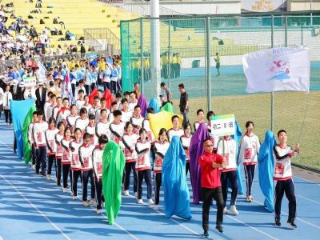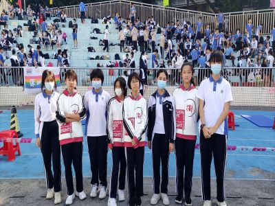
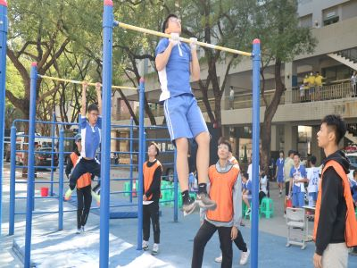

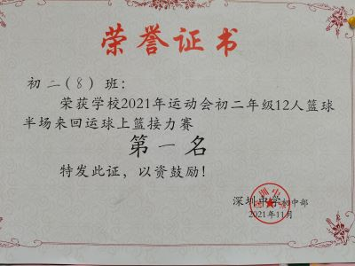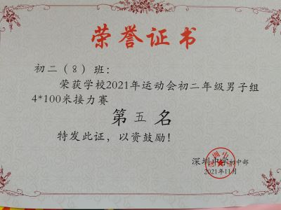
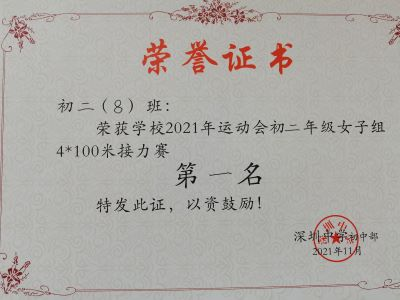
2、义工活动（1203第12次）
本周校内义工活动：D404。
3、阳光体育
4、家委会组织周末健步走活动（本学期徒步活动结束）
第9期，周日海滨栈道。
5、 班主任强调
静下心来学习
1、主题班会
11月22日晨，期中表彰与运动会动员
2、入场式训练
本周中午玥、彩分批次教同学们跳舞。
3、班服
悦、曦等同学设计班服，家委协助制作。
4、英语阅读比赛
媛同学年级（1-12）第一
5、义工活动（1126第11次）
本周校内义工活动：D404。
6、入场式彩排
11月26日，下午放学时间，彩排。
7、期中板报
宣委完成“学习金点子”的主题板报
8、天花板事件
11月26日中午，两位同学贪玩失误将天花板捅下来，按流程，家校协同处理。
1、11月15日晨，年级统一主题班会：学习无捷径 奋斗正当时。“护蛋行动”小结。
2、家长会
11月18日晚7点至9点30分，本班教室，家长会。
3、入场式分组训练
4、义工活动（1119第10次）
本周校内义工活动：D405。
5、党史学习小组
11月15日中午，图书馆，辩论会。19日中午，D605，B组活动。
6、家委会组织周末健步走活动
第8期，周日半山半海梧桐绿道。
7、接种流感疫苗
8、AB层微调
1、全校升旗仪式
11月8日晨，全校集会。启动生命教育之“护蛋行动”。
2、期中考试成绩（1-10）
总分A+等（3人）：曹、付、艺；
A等（15人）：云、骏、焓、柯、玥、圳、慈、荣、位、语、郑、毛、杰、曦、淳
语文A+等（2人）：曹、焓；
A等（17人）：裕、霖、悦、慈、江、骏、云、淳、语、鑫、玥、郑、荣、杰、柯、毛、位
数学A+等（4人）：欧、焓、付、玥；
A等（12人）：曹、位、圳、骏、云、辉、轩、柯、淳、语、荣、培
英语A+等（6人）：曹、云、
曦、
付、
语、
艺；
A等（12人）：江、骏、位、荣、玥、灏、圳、慈、昕、悦、毛、庞
历史A+等（5人）：付、艺、骏、曹、白；
A等（11人）：
柯、郑、玥、慈、毛、庞、云、荣、圳、焓、位
物理A+等（5人）：柯、付、欧、云、民；
A等（14人）：曹、曦、霖、荣、圳、焓、谢、骏、慈、毛、淳、玥、绚、辉
道法A+等（8人）：柯、庞、焓、付、骏、艺、曹、圳；
A等（8人）：
严、慈、毛、位、茹、语、云、涵
地理A+等（10人）：曹、付、玥、承、艺、慈、昶、民、曦、白；
A等（11人）：
柯、云、圳、毛、昕、哲、骏、淳、凯、蔡、涵
生物A+等（6人）：柯、曹、焓、付、艺、慈；
A等（7人）：
语、云、绚、荣、玥、位、曦
3、校运会准备
项目报名（骏）、班服设计（悦等）、队列设计（玥等）
4、义工活动（1112第9次）
本周校内义工活动：D404。

5、党史学习小组活动
6、微调与整肃
调整座位\
微调层次\
整顿静校
7、家委会组织周末健步走活动
第7期，周日梅林绿道行。
11月1日晨，班会：诚信教育与考前教育
2、复习备考
学生积极备考
家委提供轻松应对考试的小妙招（家委心理问题专家）

3、期中考试
3号上午英语听说考试，4、5号，完成期中考试。
4、完成作业问卷调查
完成“青骄第二课堂”学习与竞赛
5、家委会组织周末健步走活动
第6期，周日东西涌穿越。

10月25日晨，先锋剧场，年级升旗集会。
2、期中考前复习
3、义工活动（1029第8次）
本周校内义工活动：D404、D605。
4、家委发布过周末健步走阶段小结（班级公众号第10期）——你好，秋天！少年健步行，青春快乐行。
5、网上完成作业调查
6、家委发布考前心理指导
家委邀请专家为学生和家长专门提供考前心理指导
7、班主任强调
加强复习
1、主题班会：生命教育
10月18日晨，班会课。主题是生命教育。
2、党史学习小组研究活动
10月18日中午，图书馆研究室，郑、白等14人，第一次集中学习。
3、语参加市合唱演出
4、昶代表深圳羽毛球队获得省赛团体冠军
5、义工活动（1022第7次）
本周校内义工活动：D404、D605。
6、
家委会组织周末健步走活动
第5期，周日登上笔架山。
7、网上完成“青骄第二课堂”学习
8、班主任强调
准备期中考试
1、全校集会——爱国主题
10月11日，全校集会。观看直播。
2、台风停课
10月12日下午至13号全天，因台风全市停课。
3、参加“云队课”
10月13日晚，全体同学在网上收看全国少工委视频号“请党放心，强国有我”为主题的云队课。
4、篮球活动
10月14日周五上午，7班和8班在体育课上组织了一队和二队的篮球友谊赛。

5、义工活动（1014第6次）
本周校内义工活动：D404、D605。
6、初二年级举行语文词语+诗识记比赛
周五下午最后一节课，全班同学参加语文学科比赛活动
7、家委会组织周末健步走活动
第4期，周日登上梧桐山。
8、党史学习小组
班级由郑一民同学发起成立一个学习党史的小组。
9、班主任强调
要时常修正自己
2、义工活动（1008第5次）
本周校内义工活动：D605。
3、学习读本
1、国庆展演
9月29日下午4：30-6：00，先锋剧场。玥、语、沛、圳、毛、灏、绚、权、彩等30多人参与此次展演。

2、球队总结
9月27日晨，班会课前，班长和体委总结球赛，并给队员们赠送纪念品（家委提供）。

3、班会课：读本学习
4、国庆宣传板报——爱国诗，迎国庆
9月30日午读时间，全班同学参与爱国诗歌抄录，共迎国庆。悦、茹等制作完成。
5、阳光体育
6、义工活动（0930第4次）
本周校内义工活动：D404、D605。
7、班主任强调
国庆节，注意安全。
1、中秋放假——与您共度中秋佳节（班级公众号第9期）
2、足球比赛
9月24日周五下午，8班与9班补赛上学期年级足球小组赛未完成场次，0：3告负。胡彦淳带伤坚持上场，守门员承被撞破鼻子离场。本次上场队员还有：骏、汪、李孟、凯、哲（上半场）、琮、桁（下半场）、庞（下半场）、圳（下半场）
3、义工活动（0924第3次）
本周校内义工活动：D404、D605。
4、消防演习
9月24日下午，学校组织了消防演习。
5、昶荣同学羽毛球赛获佳绩
6、班主任强调
行事要有大格局
1、主题学习
9月13日晨，升旗仪式后学习读本
2、“九一八”事变90周年纪念活动
（1）
)9月18日（星期六）上午10时40分至11时，全市试鸣防空警报，鸣放次序：预先警报（鸣36秒、停24秒，反复3遍，时间3分钟）、空袭警报（鸣6秒、停6秒，反复15遍，时间3分钟）和解除警报（时间3分钟）。
（2）语文课上抄写国家公祭钟鼎铭文，诵读。警钟长鸣，勿忘国耻。
3、生物课观察蚯蚓
4、阳光体育
5、禁毒宣传
（1）观看视频
（2）分组讨论
（3）知识竞赛
（4）评选优秀：骏、圳、航、灏、庞、权、慈、欧、艺、付
6、选修课网上选课
9月17日晚，网上选课完毕
7、义工活动（0917第2次）
本周校内义工活动：D404、D605。
8、个案处理
9月16日放学后，蔡同学被垫脚，脚踝受伤。此事已按流程处置。
为了保证学习纪律与学习效率，对静校人员进行了微调、临停。
9、歌舞表演与足球比赛重启
10、家委会组织周末健步走活动
第3期，深圳市水土保持科技示范园
11、
班主任强调
中秋节放假，安全第一
9月6日晨班会课，教师节主题班会。
2、教师节宣传
3、阳光体育
4、图书馆静校
5、义工活动（0910第1次）
本周启动校内义工活动，图书馆、D404、D405、D605。
6、读本培训
9月8日，周三下午第8节课，学习读本。
7、家委会组织周末健步走活动
第2期，深圳湾
8、 问题处置
（1）仪表问题（已整改）
（2）课堂纪律（发红色家校交流条）
（3）静校问题（暂停1周）——未执行
（4）安全问题（已谈话）
9、“每日三问”活动
本周试行，5人参加，王浩权协管，班主任指导。
10、班主任强调
教师节，感恩见行动
1、开学典礼
9月1日上午7：55-8：35，力行楼，全校开学典礼。少年当拏云，奋斗正当时
2、课堂情况
增设了物理课（梦娜老师），新道法老师师嘉。
整体情况较好。
3、静校
共44人静校
江管理，绚协理，承监督。
4、宣传
5、家委会组织周末健步走活动
第1期，淘金山。
6、重考
9月4日，部分同学参加重考。
7、学生处进行网上心理检测
1、报到
8月30日上午9：00-11：00，C403/404教室，新学期报到。

2、交暑假作业
3、领书
4、主题班会：养心须大，用心须细
初二：公益养心 学术长才 长跑健身 迎战会考
czjszsz@qq.com